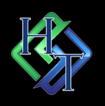

Work With Horizon
Good AI work begins with understanding how people, systems, information, and decisions actually fit together.
Three ways to begin or deepen that work. Each stands on its own; further engagement is always optional. Pricing reflects defined professional deliverables, with scope agreed in writing before work begins.
01 · AI Operating Environment Assessment
A focused examination of how your organization uses AI today, where coordination breaks down, and what deserves attention first.
Professional diagnostic: $2,500–$5,000, quoted by scope.
02 · Agentic Operating Environment Design
A practical architecture for people and AI agents working together, with clear responsibilities, information flow, and oversight.
Design engagements: $5,000–$15,000+, quoted by scope.
03 · AI Whispering & Alignment
Focused refinements and ongoing support to keep agent behavior, communication, and workflows aligned with the people they serve.
Focused engagements: $750–$2,500+. Deeper projects and ongoing support quoted separately.
Optional first step · AI Readiness Conversation
A focused consultation to clarify your priorities and decide whether a full diagnostic is appropriate. Includes a short written summary, not a full operating environment assessment.
$350 flat fee. If you proceed with a paid Assessment, the $350 may be credited toward that engagement.
How we work
We begin with the actual operating environment and agree on scope, information needs, deliverables, and decision responsibilities before work starts. Recommendations distinguish observed conditions from assumptions and identify where validation or human review is required. Clients receive documented findings or designs appropriate to the engagement, without unsupported promises of productivity gains.
To begin, send a short note about your organization and what you are trying to accomplish.